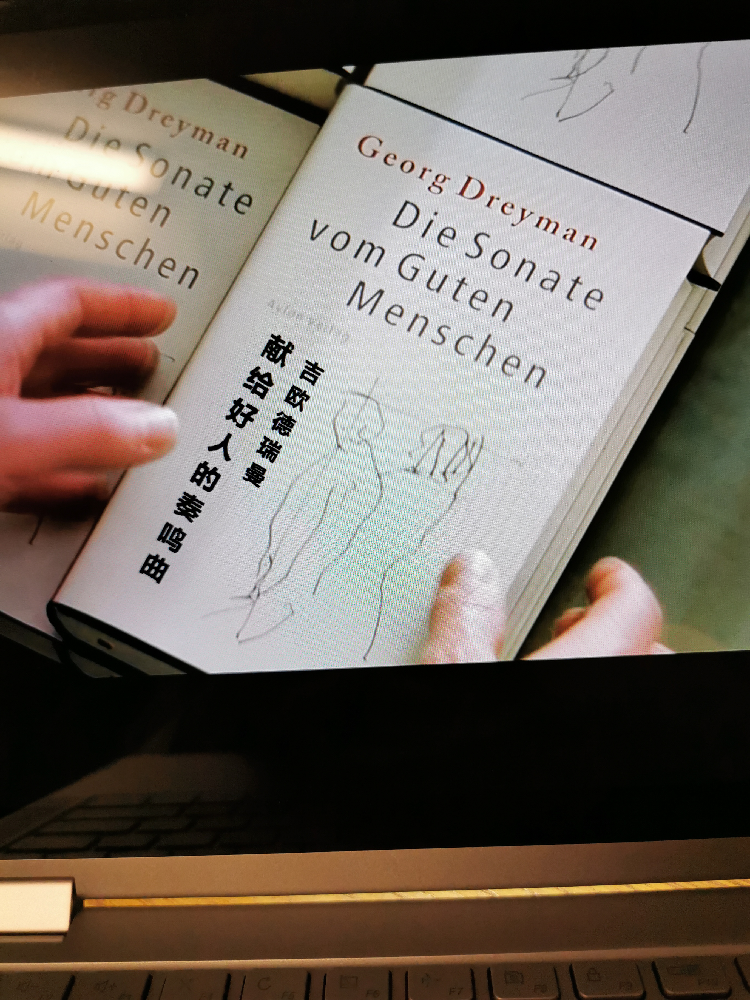

看这部电影是因为一次德语课作业：调查德国电影。我从来就没看过德国的任何影像，然而那天搜索的时候竟然着了迷，一下子看了两小时资料，觉得特别喜欢德国电影的精炼台词和社会折射。其中“窃听风暴” – Das Leben der Anderen, 以奥斯卡桂冠和多项国际大奖光彩夺目。趁着这个悠闲的假期，最擅长不务正业的我当然就开始看啦！
前126分钟循序渐进地勾勒出1989年柏林墙倒之前的东德鹤唳风声的政治形态，其中艺术家和政治家的对立，自由真理和体制的水火不容，灵魂和现实的挣扎，最能激起人意识上的虚拟抉择和思考。卫斯勒上尉不动声色的逐渐转变，映扣在穿透心灵的《好人交响曲》里，在希兰女士的信任目光中，以及当局任性弄权的险恶中。我直到最后亲眼看到卫斯勒抢先一步拿出打印机才明白，他真正已经心软了，已经开始向往和追求光明。
之前当希兰女士招供了打印机的藏身之处时，我几乎就要以为卫斯勒屈服了，为了他的事业和东德政权。谁想他竟然用这个藏身地点来拯救德瑞曼和他所代表的光明！看到此处的我，就像一汪平静清澈的水，突然被一块青绿的鹅卵石激起层层浪。刹那的心灵震撼带来无尽的惊喜！
全片最高之处，在于结尾5分钟。柏林墙倒后几年，德瑞曼醒悟了之前平顺的生活都得益于他人的保护。他开始寻找素未谋面不知姓名的卫斯勒。当他终于找到时，他迟疑了并选择默默离开。又过了一两年，卫斯勒在书店的海报下看到德瑞曼的大名和他新出的书，《Die Sonate vom Guten Menschen》。卫斯勒进店翻书，封面一尘不染，就像好人的真心一样。一翻，
再一翻，洁白的纸上赫然写着：
谨以此书献给HGW XX/7

这是德瑞曼对这位默默保护他的人的全部所知。这一刻，我看到卫斯勒眼里的泪光和柔弱，不苟言笑的他终于被打动了。接下来看到的就是他的欣慰，牺牲自己大好前程来成全他人此事终于被当事人所知并感谢。这种感谢也不是简单的碰个面致几句词，而是用自己毕生才华专门为他创作写书，把他的精神透过音乐传播世人。
看到扉页上那一行字，一瞬眼泪就开始湿润。人性的相守和共鸣，终于闪耀出跨越空间和时间的光辉。
Nein, es ist für mich.